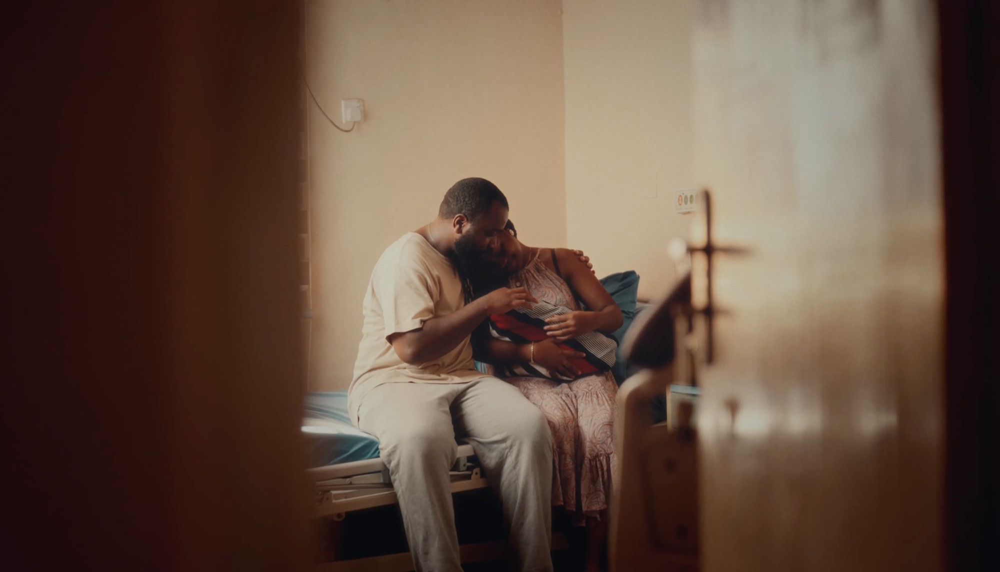
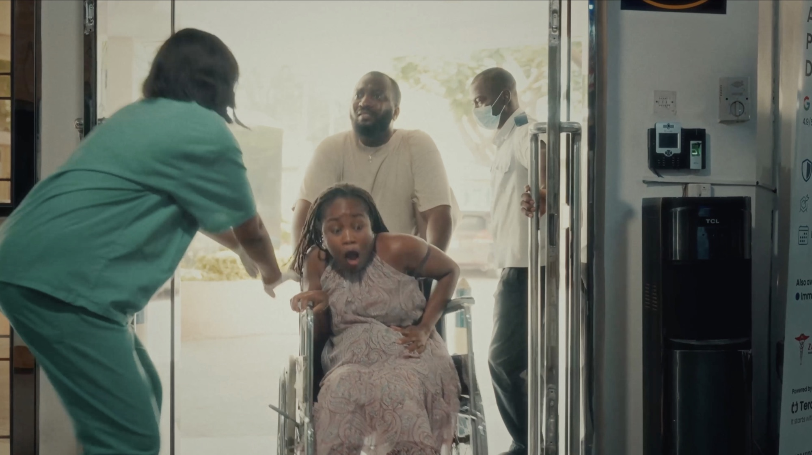
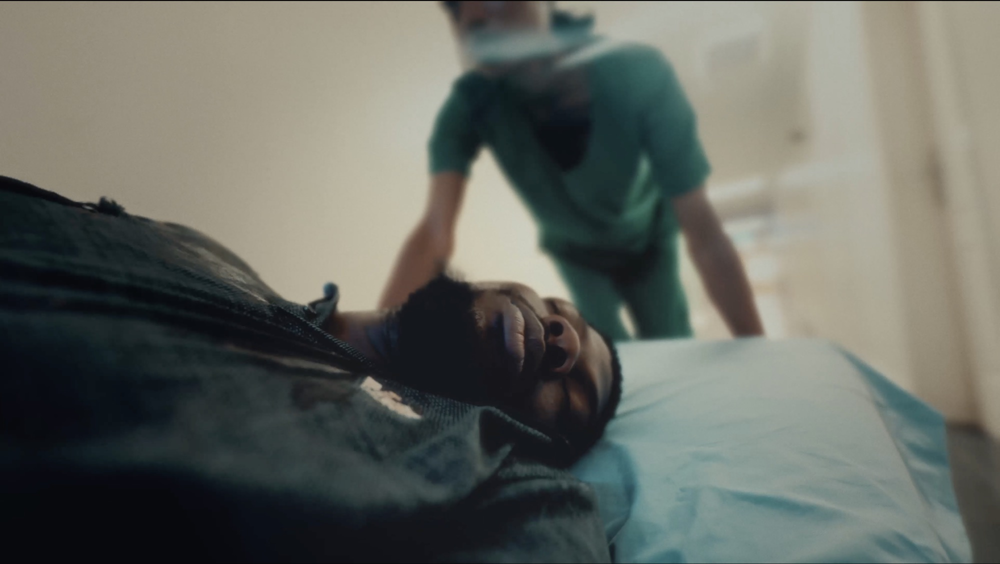
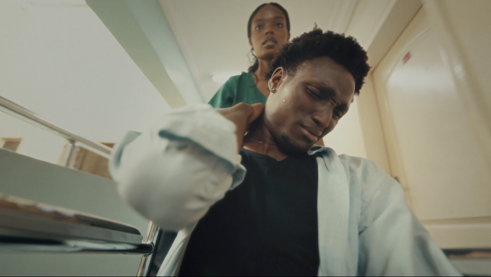
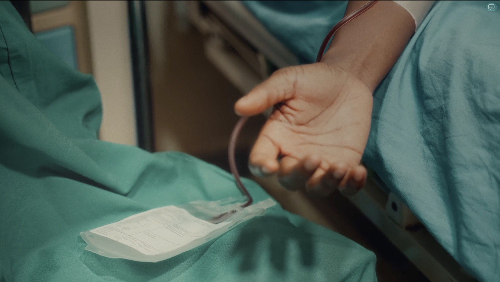

SHORT FILM — WORLD BLOOD DONOR DAY 2026
One Unit
Blood cannot be manufactured. It can only come from another person.
- ROLE
- Director
- PRESENTED BY
- Haima Health
- PRODUCTION
- Kolimo Multimedia
- SUBJECT
- Voluntary blood donation
SYNOPSIS
One Unit is a short film created to raise awareness about the life-saving importance of voluntary blood donation. Through the story of three strangers who arrive at the same hospital in critical condition, the film illustrates how a single act of generosity can connect lives in unexpected ways.
At its core, the film explores shared humanity — the idea that we often survive because someone we may never meet chose to help. It highlights the urgent need for readily available blood, the critical role of organised donor networks like Haima Health, and the power of ordinary people to make extraordinary differences.
Rather than focusing on medicine alone, One Unit reminds audiences that blood cannot be manufactured; it can only come from another person. Its ultimate message is simple yet powerful: every donation has the potential to save a life, and anyone can become the reason someone gets a second chance.
WATCH

PLAYS VIA YOUTUBE — OPEN IN A NEW TAB
STILLS



